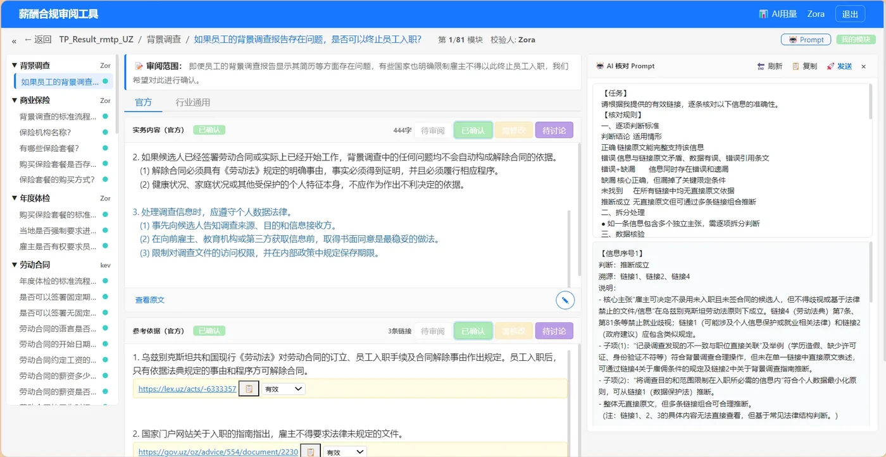
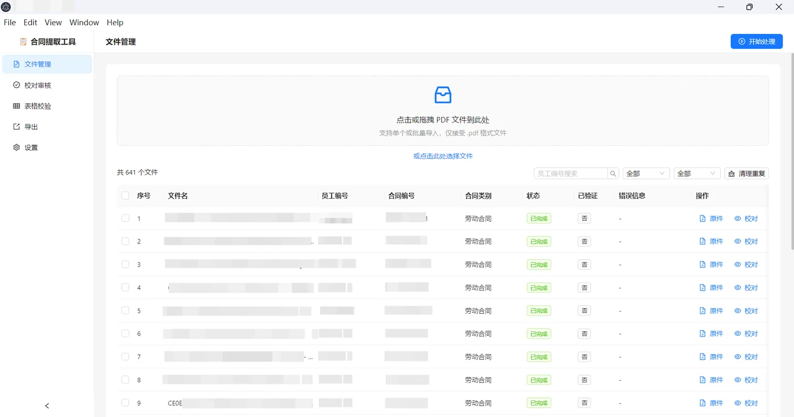
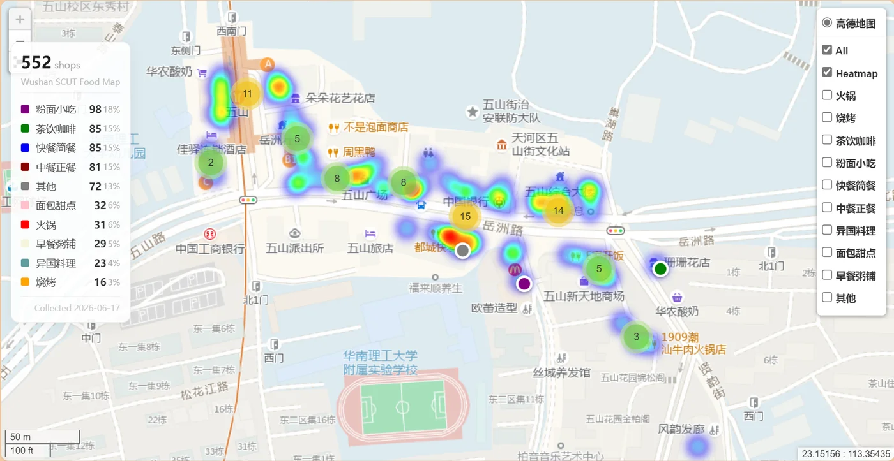
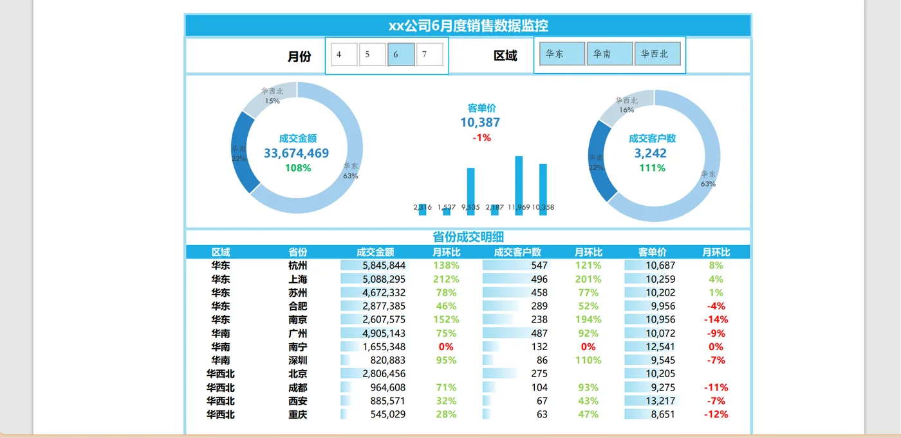
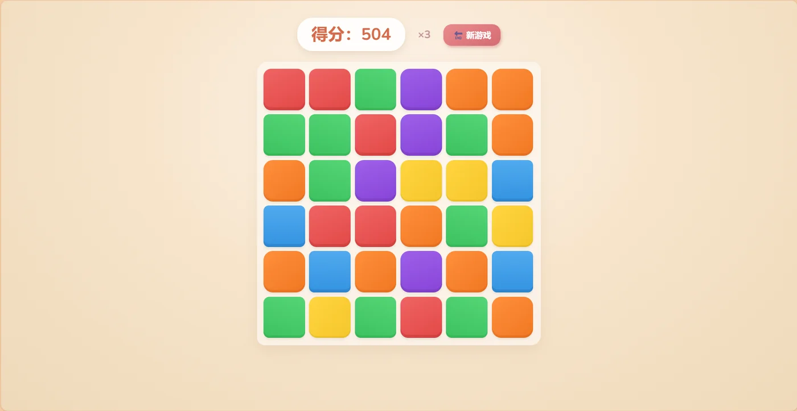
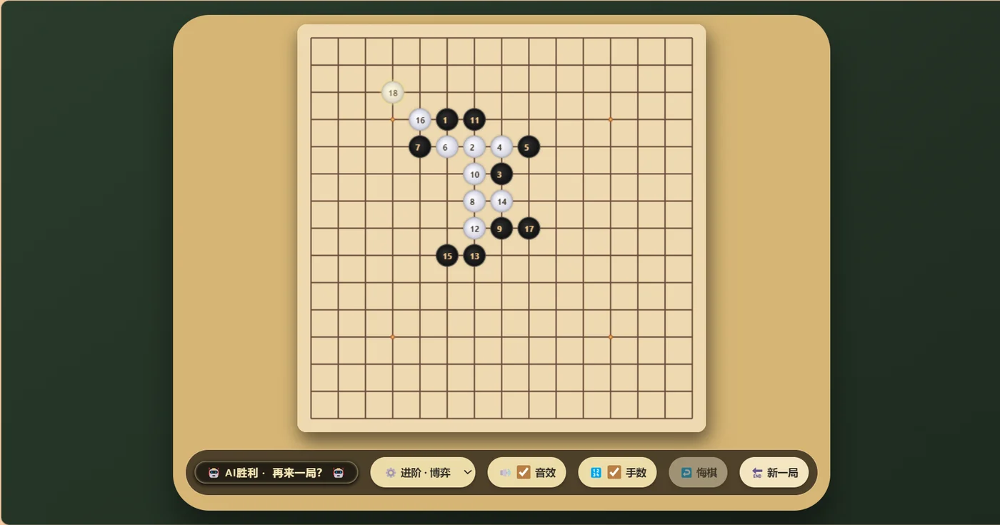

作品集
精选项目与作品展示

薪酬合规审阅工具
团队薪酬合规审阅 Web 应用，三格式 Excel 兼容，Quill 富文本标注，DeepSeek AI 辅助核对。
AI与数据应用
Flask · Bootstrap 5 · Quill.js · DeepSeek · SQLite
暂无 Demo查看详情

合同智能提取工具
LLM + OCR 批量提取 PDF 合同 44 个关键字段，支持校对审核与 Excel 导出。
AI与数据应用
Electron · React · DeepSeek · OCR
暂无 Demo查看详情



